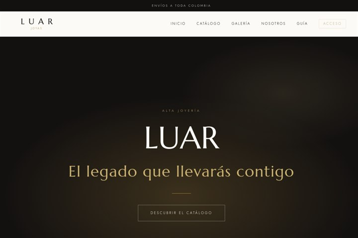
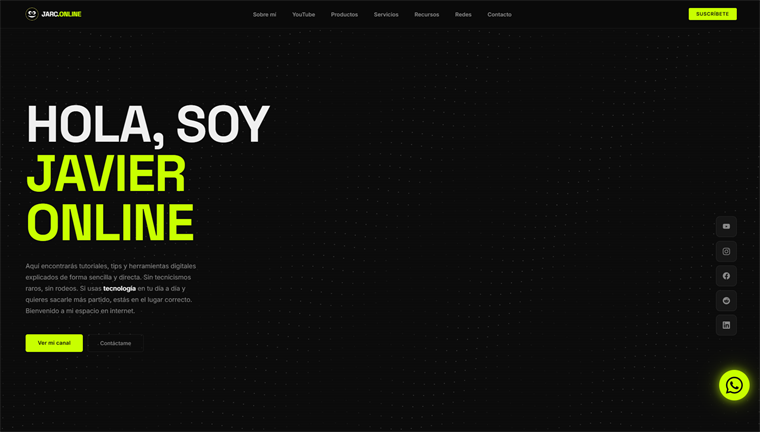

Trabajos recientes
Esto es lo que entrego
Proyectos reales, no promesas. Toca una tarjeta para ver el trabajo en línea.

Proyecto web · Cliente
LUAR JOYAS
Alta joyería: catálogo por categorías y compra por WhatsApp.
Ver proyecto
Proyecto web
JarcOnline.com
Programado desde cero, sin plantillas ni suscripciones.
Ver proyecto
Edición de video
Mi equipo para crear contenido
Editado en DaVinci Resolve: cortes, color y foto propia.
Ver en YouTube
Miniatura
Fuentes gratis en segundos
Miniatura de alto contraste, pensada para subir el CTR.
Ver en YouTube
Miniatura
Fuentes gratis para DaVinci
Diseño con logo destacado y texto de alto impacto.
Ver en YouTube
Miniatura
Mi kit de viaje para crear
Flatlay de equipo portátil: gimbal, estuche y accesorios.
Ver en YouTube
Miniatura
Reseña del navegador Brave
Miniatura colorida para un video del navegador Brave.
Ver en YouTube
Miniatura
Edita en DaVinci Resolve
Miniatura para tutorial de edición paso a paso.
Ver en YouTube